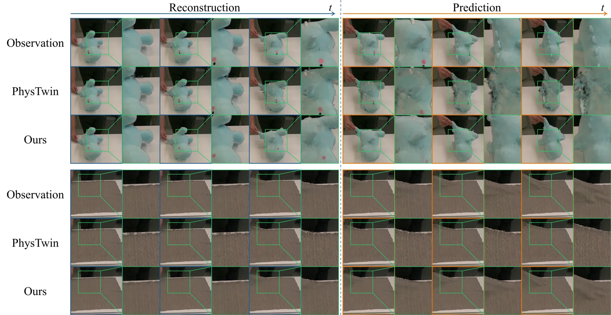
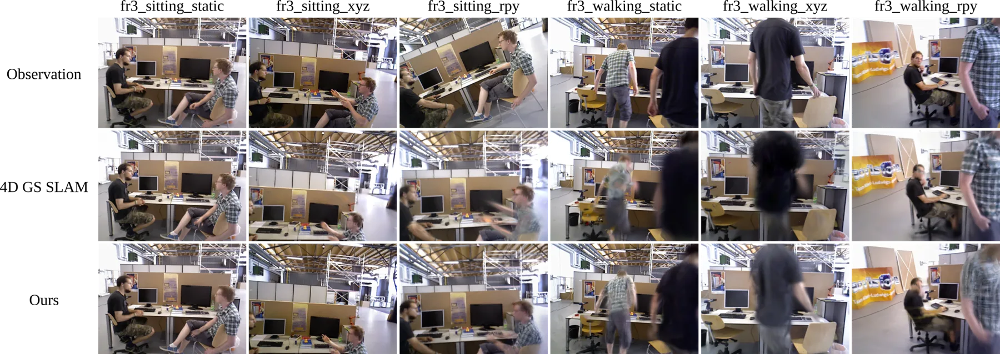

Physical SLAM：把物理动力学装进 4D Gaussian SLAM
Physical SLAM: Physics-aware Simultaneous Localisation and Mapping
用语义掩码把场景切成静态背景（DROID-SLAM 式稠密 BA 跟踪）与动态物体（TRELLIS 网格 + 弹簧–质量模型）两支；物体的每个 Gaussian 以重心坐标与法向偏移绑定到规范网格面，观测几何以高斯核加权的虚拟观测力牵引节点、而非直接替换；物理参数在整个观测窗口按 Chamfer 距离叠加参数平滑项更新，表面对齐正则用 Charbonnier 罚项抑制法向漂移；未来预测关闭观测力、只按动作自回归推演。PhysTwin 重建 PSNR 31.140（+10.4%）、预测 28.430（+11.0%）；TUM RGB-D 平均 ATE 1.43 cm（4DGS-SLAM 1.8 cm），平均 SSIM 0.814、LPIPS 0.209 更好但 PSNR 22.31 略低。
mean ATE RMSE on TUM RGB-D
reconstruction PSNR gain
prediction PSNR gain
reconstruction IoU
作者、单位与技术谱系 · Research context
作者与单位
研究脉络
- DROID-SLAM 式稠密 BA / WildGS-SLAM方法基座关系：相机跟踪沿用 WildGS-SLAM 采用的 DROID-SLAM 式稠密 bundle adjustment 后端，静态背景建图沿用其地图扩展与局部窗口优化；本文把其中的学习式 per-pixel 不确定度图替换为语义动态掩码。[官方 HTML 全文（第 IV-A 节）]
- PhysTwin方法上游关系：可形变物体的规范网格初始化（TRELLIS）、弹簧图构建、动作驱动控制弹簧与「重建/预测」两任务协议都 following PhysTwin；PhysTwin 同时是主要基线。[官方 HTML 全文（第 IV–V 节、表 I）]
- 4DGS-SLAM方法上游（同类基线）关系：最接近的动态 4D Gaussian SLAM 基线；论文指出其用运动学变换（或控制点插值）建模动态 Gaussian，而本文把 Gaussian 直接绑定到物理形变面。[官方 HTML 全文（第 IV-B 节、表 II）]
合作网络
- Cambridge 内部共同署名University of Cambridge → Physical SLAM 七位作者关系：共同署名 / 同一单位[arXiv 摘要页（作者与致谢脚注）]
- 对 TRELLIS / PHALP / CoTracker3 / YOLOv9 的技术依赖Physical SLAM → TRELLIS、PHALP（SMPL/4DHumans）、CoTracker3、YOLOv9关系：官方模型依赖（明确技术依赖）[官方 HTML 全文（第 IV 节）]
- 与 PhysTwin 基准/数据依赖Physical SLAM 的评测流程 → PhysTwin benchmark关系：数据集/基准依赖[官方 HTML 全文（第 V-A 节）]
- 代码发布状态（待核验）Physical SLAM → 承诺接收后发布的源码关系：待发布的发布承诺（尚未核验）[arXiv 摘要页]
作者、单位与组件依赖来自论文首页脚注与第 IV 节（论文报告的事实）；谱系条目中的「基座/上游」定位来自论文引文与正文表述（基于来源的解读）；论文没有出现跨机构署名，因此不写导师/师生或实验室隶属关系；代码发布以论文承诺为准，未做额外推断。
方法本质拆解 · What actually changed
是不是微调？——预训练组件冻结，可训练量是逐场景 Gaussian 与物理参数
论文没有对一个统一网络做端到端微调。YOLOv9 分割、PHALP/SMPL 人体网格、4DHumans 跟踪、TRELLIS 规范网格、CoTracker3 接触点跟踪都是冻结的预训练组件；真正被优化的是每个场景的 Gaussian 属性与弹簧–质量的物理参数 θ={m_i, k_ij, γ_ij, ℓ_ij}，它们在观测窗口 W_t 内迭代更新。因此它是「在线逐场景优化」而不是「预训练后微调」，权重改变的只有地图与物理参数，主干网络权重不变。
有没有额外约束？——表面绑定、观测力与表面对齐正则
新增的硬结构约束有三个：每个物体 Gaussian 必须通过重心坐标 β 与法向偏移 h 绑定到规范网格面 (q(n), β, h)，位置由面片与法向共同决定；观测几何不直接替换节点位置，而是转成高斯核加权的虚拟观测力，且只作用于通过深度遮挡测试的可见节点；物理参数更新带平滑项 λ_θ‖θ−θ_{t−1}‖²，渲染优化中再用 Charbonnier 罚项约束 Gaussian 中心到关联面平面的有符号距离，并按尺度反加权。约束作用在「Gaussian 位置/面片偏移」与「物理参数」两类变量上，把外观优化限制在物理面附近。
推理/后端到底做了什么？——流式在线后端 + 纯前向的物理推演
推理不是一次性前向。每帧要跑：静态分支的 Gaussian 地图扩展与局部关键帧窗口优化（位姿来自稠密 BA）、动态分支的弹簧–质量仿真（含子步内重算的观测力、Chamfer 驱动的物理参数更新）以及 Gaussian 变换与外观优化。未来预测阶段则完全不含观测校正：关闭观测力、把当前校正态与物理参数作为初值，按给定动作自回归推演弹簧–质量系统，再把预测网格面用于 Gaussian 中心变换。论文没有使用因子图或全局 bundle adjustment 之外的额外后端。
方法本质是什么？——把观测与物理状态的耦合从「替换」改成「力牵引 + 整窗参数更新」
本质是把视觉观测对物理状态的注入方式重新定义：不再用观测点直接覆盖仿真节点，而是让观测以力（带可见性与高斯核权重）参与物理积分，再在整段观测窗口上聚合误差去更新物理参数，最后用表面绑定把 Gaussian 运动完全交给形变中的物理面。它改变的是「视觉与物理之间的接口」，而不是模型容量或表示形式；明确没有做的是：没有引入学习式的运动学变换网络，也没有放松固定弹簧–质量拓扑这一假设（作者把拓扑变化列为未来工作）。
输入/先验 = RGB-D 流 + 冻结的 YOLOv9/PHALP/TRELLIS/CoTracker3 组件 + 从首帧前景初始化的弹簧–质量网格；改变的位置 = 物体 Gaussian 与规范网格面之间的绑定、以及物理状态与物理参数的更新方式；约束或合并动作 = 高斯核加权的虚拟观测力（仅可见节点）+ 整窗 Chamfer 参数更新 + 平滑项 + 按尺度加权的表面法向正则；直接效果 = PhysTwin 重建/预测 PSNR 相对提升 10.4%/11.0%，TUM RGB-D 平均 ATE 降到 1.43 cm（−20.6%）。

动机与问题Motivation
动机与问题
既有的动态 SLAM / Gaussian SLAM 大多把运动区域当作干扰：检测后掩掉或降权，好处是定位更稳、静态重建更干净，代价是动态物体没有被当作 4D 世界的一部分重建。较新的 4D Gaussian SLAM 会显式维护动态 Gaussian 并建模时序变换，但论文指出这些场本质上仍然是「视觉 + 运动学」的：它们描述表面怎么动，却不描述为什么这样动、以及在外力作用下接下来会怎么动。论文因此把问题改写为：能否在流式 RGB-D 下同时重建几何/外观与可形变物体的物理状态（质量、刚度、阻尼、静止长度），并用同一套参数支持动作条件化的未来预测。
方法Method
方法总览
给定 RGB-D 流，YOLOv9 给出物体/背景掩码，背景像素初始化并扩展静态 Gaussian 场用于相机跟踪；物体像素初始化规范物体 Gaussian 场，其中每个 Gaussian 以重心坐标 β 与法向偏移 h 绑定到最近的规范网格面，构成绑定集 ℬ。对操作对象，论文按 PhysTwin 的做法用 TRELLIS 从首帧前景初始化规范网格并构建弹簧图；对人类等主动运动物体，用 PHALP/SMPL 网格与 4DHumans 跟踪。跟踪阶段用 DROID-SLAM 式稠密 BA 只在背景像素上优化位姿，但用语义动态掩码替代了 WildGS-SLAM 的学习式不确定度图；动态分支则先用弹簧–质量仿真推进状态，再用观测力把状态校正到 X̂_t，随后在观测窗口上更新物理参数并用绑定集变换 Gaussian。
关键技术细节
观测力写作 F_i^obs = vis_i · k_obs · Σ_{d∈N_i} ω_ij (d_j − x_i)，其中 ω_ij 是高斯核权重、k_obs = exp(κ_obs) 控制强度，只有通过深度遮挡测试的可见节点才受力；可见性与观测力在每个仿真子步内重算，因此不会出现「一旦跟错就锁死」的突变。物理参数更新最小化 L_geo = Σ_{τ∈W_t} L_CD(Pos(X̂_τ(θ)), D_τ) + λ_θ‖θ − θ_{t−1}‖²，用 Chamfer 距离避免点对点对应，并用平滑项抑制参数突变；因为每次推演都从观测校正态出发，跟踪漂移与模型误差被解耦。Gaussian 中心按 μ̄ = Σ β_nr p_r^t + h_n n^t 变换，直接跟随形变面，不需要 LBS 或反复 KNN 搜索；表面对齐正则 L_surf 用 Charbonnier 罚项 ρ 约束 Gaussian 中心到关联面平面的有符号距离，并按尺度 s̄_n 反加权让大 Gaussian 惩罚更轻。

实验Experiments
实验设置
数据集与规模：PhysTwin 基准（可形变物体的 RGB-D 交互视频，含毛绒玩具、绳索、类布物体、包裹）用于重建与动作条件化预测两任务；TUM RGB-D 的 fr3/sit 与 fr3/walk 六个序列按 4DGS-SLAM 协议评测跟踪与渲染；此外作者自建一个移动相机操作数据集，共 207 帧（前 124 帧重建、后 83 帧动作预测）。指标：3D 用单方向 Chamfer 距离与跟踪误差，2D 用 IoU、PSNR、SSIM、LPIPS，跟踪用 ATE RMSE。对照方法：PhysTwin、Spring-Gau、GS-Dynamics（PhysTwin 表）；TUM 上对照 RoDyn-SLAM、MonoGS、SplaTAM、4DGS-SLAM；自建数据集主要对照 4DGS-SLAM。消融在 PhysTwin 上做「去观测力」与「去表面对齐正则」两档。
实验数字与比较
PhysTwin 重建列（来源：论文表 I）：本文 IoU 91.9、PSNR 31.140、SSIM 0.980、LPIPS 0.024，对照 PhysTwin 为 84.4 / 28.214 / 0.945 / 0.034，PSNR 相对提升 10.4%；预测列本文 IoU 75.9、PSNR 28.430、LPIPS 0.049，PhysTwin 为 72.5 / 25.617 / 0.055，PSNR 相对提升 11.0%。TUM RGB-D 跟踪（来源：论文表 II）：本文平均 ATE 1.43 cm，4DGS-SLAM 1.8 cm、RoDyn-SLAM 5.1 cm、MonoGS 15.8 cm、SplaTAM 62.2 cm；其中 fr3/walk_xyz 本文 1.23 cm 对 4DGS-SLAM 的 2.1 cm。渲染（来源：论文表 III）：本文平均 SSIM 0.814 对 4DGS-SLAM 0.786（+3.6%）、LPIPS 0.209 对 0.228（−8.3%），但平均 PSNR 22.31 略低于 22.46。自建移动相机数据集（来源：论文表 IV）：重建 PSNR 24.20 对 4DGS-SLAM 22.65、SSIM 0.817 对 0.774。
消融/失败边界
去掉观测力（来源：论文表 V）：重建 IoU 从 91.9 掉到 83.5、PSNR 从 31.140 掉到 29.650、LPIPS 从 0.024 升到 0.044；预测 IoU 从 75.9 掉到 68.2，说明观测力是连接视觉观测与物理状态的核心模块。去掉表面对齐正则：重建 IoU 从 91.9 降到 86.0、PSNR 降到 30.353，预测 IoU 降到 69.7，支持「抑制法向漂移、保留切向调整」的设计。失败边界有三处明确记录：其一，自建数据集上 LPIPS 反而变差（0.295 对 4DGS-SLAM 的 0.251），说明像素级/结构相似度改善不保证感知指标改善；其二，作者明确承认系统假设固定弹簧–质量拓扑，无法处理撕裂等拓扑变化；其三，主动运动物体目前只测过 human 一种类型，其余形态未验证。
局限与迁移Limitations & Transfer
局限与待核验
作者明确承认的限制：当前系统假定固定的弹簧–质量拓扑，未来工作要支持拓扑变化的可撕裂物体；方法依赖 YOLOv9 分割掩码、PHALP/SMPL（人）与 TRELLIS（规范网格）等外部预训练组件，论文没有给出这些组件失败时的退化分析。我们的待核验项：(a) 论文写「source code will be released upon acceptance」，抓取时未检索到可访问的仓库或项目页，端到端复现与代码可达性属待核验；(b) 物理参数（质量、刚度、阻尼、静止长度）的初值与取值范围、标定流程未在正文给出，参数敏感性无法由原文确认；(c) 在 TUM 这种通用 RGB-D SLAM 序列上，动态物体被当作未知动作（a=0）处理，此时「物理建模」相对纯观测校正的净收益没有单独消融；(d) 未来预测的评测帧数与时间跨度在正文中未给出统一表格，长时域外推稳定性无法由原文确认。
与你研究路线的关系
可迁移点有三。第一，「观测几何 → 观测力 → 状态校正」的耦合方式，与你在量测更新与状态约束之间做取舍时面对的是同一个问题：直接替换状态会引入不连续与振荡，转成带可见性判据的力/残差则天然可加权、可平滑；实现上只需把观测项从硬赋值改为高斯核加权的残差项。第二，物理参数在「整个观测窗口」上聚合更新，而不是逐帧拟合，这与你把低置信度观测聚合成段级先验再联合解算的做法同构；其 λ_θ 平滑项也提供了一个「参数别跳变」的显式手段。第三，把地图基元（Gaussian）绑定到物理面（重心坐标 + 法向偏移），相当于给地图元附加了一个可解释的运动自由度，可类比你在多源融合中给观测附加一个低维运动模型而不是让它自由漂移。下一步实验建议：(a) 用你自己的动态序列做「硬替换 vs 高斯核力牵引」最小 A/B，量测点应是跟踪 ATE 与动态区域几何一致性；(b) 把表面对齐正则的「按尺度反加权」思路移植到你的动态外点抑制权重上，验证是否能减少静态区被动态物体污染；(c) 若要接入你的后端，优先验证固定拓扑假设的边界——论文证据表明拓扑变化是明确的失效条件。

